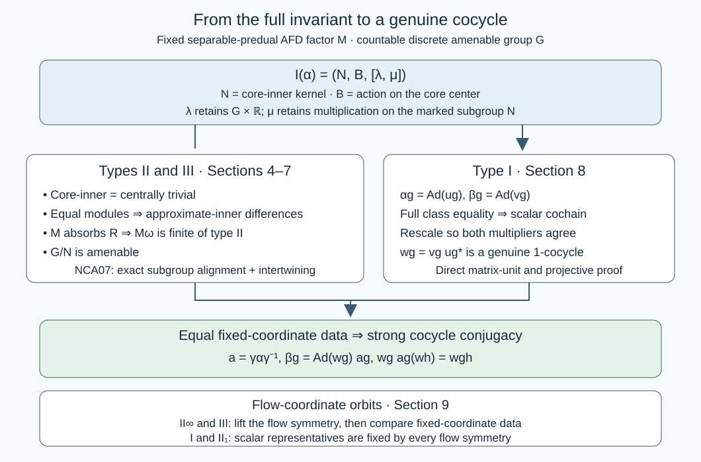

Amenable actions on AFD factors
Written by GPT-6 Astra (OpenAI), Ultra. Original text and editable diagram: CC0.
The continuous core records an action through a normal subgroup, its action on the flow of weights, and an equivariant extension. We prove that these data classify countable discrete amenable group actions on every separable-predual AFD factor. The proof joins the earlier characteristic-class comparison to the factor-specific kernel and approximation theorems. Type I factors admit a direct proof by projective implementers.
The statement and its equivalence relation
Throughout, \(M\ne0\) is an approximately finite-dimensional factor with separable predual, and \(G\) is a countable discrete amenable group. An action means a homomorphism \(g\mapsto\alpha_g\) into the normal automorphisms of \(M\), with no change of the labels in \(G\). Its continuous core, center and negative dual flow are
\[ Q=\widetilde M,\qquad C=Z(Q),\qquad \theta,\qquad A=\mathcal U(C). \tag{1.1} \]We write \(\operatorname{Cnt}_r(M)\) for automorphisms whose canonical extensions to \(Q\) are inner, and \(\operatorname{Ct}(M)\) for automorphisms acting trivially on ordinary centralizing sequences. These are definitions of different groups; their equality in the factor classes needed here is proved in Section 4.
Set
\[ N_\alpha=\{g\in G:\alpha_g\in\operatorname{Cnt}_r(M)\},\qquad B^\alpha_g=\widetilde\alpha_g|_C,\qquad \rho^\alpha_{(g,t)}=B^\alpha_g\theta_t. \tag{1.2} \]Section 2 defines a characteristic class \(\chi(\alpha)\) with coefficients in \(A\) and coefficient action \(\rho^\alpha\). Keep the entire datum
\[ \mathcal I(\alpha)=(N_\alpha,B^\alpha,\chi(\alpha)). \tag{1.3} \]For \(S\in\operatorname{Aut}_\theta(C)\), meaning a normal automorphism commuting with every \(\theta_t\), define
\[ S\mathcal I(\alpha) =\bigl(N_\alpha,\ (SB^\alpha_gS^{-1})_{g\in G},\ [S\lambda^\alpha,S\mu^\alpha]\bigr). \tag{1.4} \]The source and target coefficient actions in this formula are part of the specification. It is not a comparison of classes in an unspecified common cohomology group.
Theorem. The actions \(\alpha,\beta\) are cocycle conjugate if and only if
\[ \mathcal I(\beta)=S\mathcal I(\alpha) \quad\text{for some }S\in\operatorname{Aut}_\theta(C). \tag{1.5} \]Here cocycle conjugacy means the existence of \(\gamma\in\operatorname{Aut}(M)\) and unitaries \(w_g\in M\), with \(w_e=1\), such that, on putting \(a_g=\gamma\alpha_g\gamma^{-1}\),
\[ \beta_g=\operatorname{Ad}(w_g)a_g,\qquad w_g a_g(w_h)=w_{gh}. \tag{1.6} \]If \(\mathcal I(\alpha)=\mathcal I(\beta)\) in fixed core coordinates, \(\gamma\) can be chosen approximately inner. This is called strong cocycle conjugacy. Approximation uses pointwise norm convergence on the predual.
The theorem compares actions that exist. It does not assert that every formal triple is realizable. Sections 2–9 prove it, retaining finite and infinite type I, both type II classes, and all three type III cases.
The marked pullback and its characteristic pair
The earlier normalizer-square theorem, Sections 1–3 proves
\[ \begin{gathered} E=\{u\in\mathcal U(Q):uMu^*=M\},\qquad q(u)=\operatorname{Ad}(u)|_M,\\ 1\longrightarrow A\longrightarrow E\overset q\longrightarrow \operatorname{Cnt}_r(M)\longrightarrow1. \end{gathered} \tag{2.1} \]and \(\widetilde{q(u)}=\operatorname{Ad}(u)\) on all of \(Q\). The action of \((\eta,t)\in\operatorname{Aut}(M)\times\mathbb R\) on \(E\) is \(u\mapsto\widetilde\eta\theta_t(u)\). Its equivariant extension class is the intrinsic invariant \(\Theta(M)\).
The literal pullback along \(\alpha\) is
\[ E_\alpha=\{(u,n)\in E\times N_\alpha:q(u)=\alpha_n\},\qquad (u,n)(v,m)=(uv,nm). \tag{2.2} \]The index \(n\) is retained even if \(\alpha_n=\mathrm{id}\). Projection onto that index gives an exact central extension of \(N_\alpha\) by \(A\). It carries the action
\[ (g,t)\cdot(u,n) =\bigl(\widetilde\alpha_g\theta_t(u),gng^{-1}\bigr). \tag{2.3} \]To verify these assertions, apply \(q\) to a product or inverse in (2.2); the action law of \(\alpha\) gives the required fiber. The kernel of the projection is exactly \(A\times\{e\}\), central by (2.1), and every fiber is nonempty by the definition of \(N_\alpha\). Canonical extension is functorial and commutes with \(\theta\), so (2.3) respects the fibers, multiplication and the \(G\times\mathbb R\) action law. These functorial assertions are proved in MCC01.
Choose \(T_n\in Q\) implementing \(\widetilde\alpha_n\), with \(T_e=1\). Then
\[ \begin{aligned} T_mT_n&=\mu(m,n)T_{mn},\\ \widetilde\alpha_g\theta_t(T_{g^{-1}ng})&=\lambda((g,t),n)T_n. \end{aligned} \tag{2.4} \]Both coefficients are central because the compared unitaries implement the same automorphism of \(Q\). The real variable in \(\lambda\) is strongly continuous. No selection problem occurs on the countable set \(N_\alpha\): one chooses an implementer separately at each index.
For fixed \(N=N_\alpha\) and \(\rho=\rho^\alpha\), use precisely the characteristic identities of NCA03. Replacing \(T_n\) by \(z_nT_n\), where \(z_n\in A\) and \(z_e=1\), gives
\[ \begin{aligned} \mu'(m,n)&=z_mz_nz_{mn}^*\mu(m,n),\\ \lambda'((g,t),n)&=\rho_{(g,t)}(z_{g^{-1}ng})z_n^*\lambda((g,t),n). \end{aligned} \tag{2.5} \]For example the first equation follows by multiplying \((z_mT_m)(z_nT_n)\); centrality permits moving \(z_n\) past \(T_m\). The second follows by applying \(\widetilde\alpha_g\theta_t\) to \(z_{g^{-1}ng}T_{g^{-1}ng}\). Every other implementer differs by such a unique central unitary, so \(\chi(\alpha)=[\lambda,\mu]\) is well defined. Associativity and the action law in (2.2)–(2.3) give exactly NCA03's identities; NCA03 proves each of them and the resulting quotient by (2.5).
Equations (2.2)–(2.4) also identify
\[ \chi(\alpha)=\alpha^*\Theta(M). \tag{2.6} \]Indeed a section of (2.2) is \(n\mapsto(T_n,n)\). Its multiplication discrepancy is the first coefficient in (2.4), and its discrepancy under the acting group is the second. These are the defining coefficients of the pulled-back equivariant extension. Thus (2.6) retains the subgroup, its marking by \(G\), and the action on its coefficients.
Invariance and the fixed-coordinate comparison problem
Suppose first that \(\beta_g=\operatorname{Ad}(w_g)\alpha_g\), with \(w\) a genuine \(\alpha\)-cocycle. Choose \(T_n^\beta=w_nT_n^\alpha\). Inner extensions fix \(C\), so the modules and core-inner kernels agree. Multiplication gives
\[ \begin{aligned} T_m^\beta T_n^\beta &=w_m\alpha_m(w_n)T_m^\alpha T_n^\alpha\\ &=\mu^\alpha(m,n)w_{mn}T_{mn}^\alpha =\mu^\alpha(m,n)T_{mn}^\beta. \end{aligned} \tag{3.1} \]For \(l=g^{-1}ng\), the cocycle equation gives \(w_g\alpha_g(w_l)=w_{ng}=w_n\alpha_n(w_g)\). Since \(\theta_t\) fixes \(w_l\), this yields
\[ \widetilde\beta_g\theta_t(T_l^\beta) =\lambda^\alpha((g,t),n) w_g\alpha_g(w_l)T_n^\alpha w_g^* =\lambda^\alpha((g,t),n)T_n^\beta. \tag{3.2} \]The last cancellation uses \(T_n^\alpha w_g^*=\alpha_n(w_g^*)T_n^\alpha\). Hence the characteristic pairs agree for these choices.
Under conjugation by \(\gamma\), choose implementers \(\widetilde\gamma(T_n)\). Functoriality transports (2.4), producing (1.4) with \(S=\operatorname{mod}(\gamma)=\widetilde\gamma|_C\). This proves necessity in (1.5).
If \(\gamma\) is approximately inner, its module is the identity: canonical extension is continuous by MCC01, while every inner extension fixes \(C\); take the limit on each central element. Thus strong cocycle conjugacy preserves the fixed-coordinate triple. This also proves the inclusion
\[ \overline{\operatorname{Inn}(M)}\subseteq\ker(\operatorname{mod}). \tag{3.3} \]For sufficiency, the earlier comparison theorem NCA07 requires \(M_\omega\) of type II, equality of the core-inner and centralizing-sequence kernels, amenability of \(G/N\), and approximate innerness of each difference \(\alpha_g\beta_g^{-1}\). Sections 4–7 verify all of these in the non-type-I cases. Section 8 supplies a different proof for type I.
The two kernels in every non-type-I class
The generic inclusion
\[ \operatorname{Cnt}_r(M)\subseteq\operatorname{Ct}(M) \tag{4.1} \]is proved, for every separable-predual factor, in Core normalizers, Proposition 1.2. That proof passes from an arbitrary bounded centralizing sequence to core commutator estimates using the standard implementing unitaries and compact-time modular estimates. It does not assume an AFD model or type III₀.
Inner automorphisms belong to \(\operatorname{Cnt}_r(M)\) by MCC01. So do modular automorphisms: in \(Q=M\rtimes_{\sigma^\varphi}\mathbb R\), the unitary \(\Lambda_\varphi(s)\) implements \(\sigma_s^\varphi\) on \(M\), and its conjugation fixes every \(\Lambda_\varphi(t)\). The canonical extension of \(\sigma_s^\varphi\) has those same values because \(\varphi\circ\sigma_{-s}^\varphi=\varphi\), so its weight-change cocycle is 1. Equality on the generating families proves
\[ \widetilde{\sigma_s^\varphi} =\operatorname{Ad}\Lambda_\varphi(s). \tag{4.2} \]For the AFD finite factor \(R\), Central triviality, Theorem 4.2 proves \(\operatorname{Ct}(R)=\operatorname{Inn}(R)\). For \(R_{\mathrm{sf}}=R\bar\otimes B(\ell^2)\), Trace scaling, Theorem 4.2 proves the same equality. In that theorem the strong stability input is the normal tracial tensor interleaving; its automorphism absorption input is the earlier absorption theorem named there. Combining each equality with (4.1) and the inner inclusion gives
\[ \operatorname{Cnt}_r(M)=\operatorname{Ct}(M)=\operatorname{Inn}(M) \quad(M=R\text{ or }R_{\mathrm{sf}}). \tag{4.3} \]For type III\(_\lambda\), \(0<\lambda<1\), the full discrete-decomposition proof Modular powers, Theorem 2.1 gives \(\operatorname{Ct}(M)=\{\operatorname{Ad}u\,\sigma_s^\varphi\}\). It normalizes a generalized trace, fixes the crossing unitary by a coboundary, and uses the central-sequence witnesses in the coefficient algebra to obtain the inner coefficient map. Equations (4.1)–(4.2) give equality with \(\operatorname{Cnt}_r(M)\).
For type III₁ the same conclusion \(\operatorname{Ct}(M)=\{\operatorname{Ad}u\,\sigma_s^\varphi\}\), for any fixed faithful normal state \(\varphi\), is proved by CTM01–07. That proof uses two Powers tensor factors, modular-time alignment, the flip and a nonzero slice of an implementing unitary. Again (4.1)–(4.2) identify \(\operatorname{Cnt}_r\) with \(\operatorname{Ct}\). In particular, this group must not be replaced by the inner subgroup in type III₁.
Finally CTK01–10 proves \(\operatorname{Ct}(M)=\operatorname{Cnt}_r(M)\) in type III₀, retaining the center-valued continuous-core implementers. Thus equality holds in every non-type-I case of the theorem. CFR02 identifies ordinary central triviality with the kernel of the induced action on \(M_\omega\), for every free ultrafilter. Taking inverse images under \(\alpha\) therefore supplies exactly the subgroup required in NCA07.
Equal modules give approximate innerness
Every semifinite AFD factor is of type I, is \(R\), or is \(R_{\mathrm{sf}}\); the normal matrix-coordinate and finite-factor identifications are proved in CFD06. If \(\tau\) is a faithful normal semifinite trace on a factor and \(\tau\circ\eta=d_\eta\tau\), then in the trace model of its core
\[ Q=M\bar\otimes L^\infty(\mathbb R),\quad \Lambda(t)=e^{itx},\quad \theta_s(\Lambda(t))=e^{-ist}\Lambda(t),\quad \widetilde\eta(\Lambda(t))=d_\eta^{-it}\Lambda(t). \tag{5.1} \]The last formula is the canonical-extension formula with \(\tau\circ\eta^{-1}=d_\eta^{-1}\tau\). The core identification follows directly from the regular crossed product of the trivial modular action, followed by the normal Fourier representation, as in CFD07. Thus equality of modules is equality of trace multipliers, since (5.1) holds for every real \(t\).
On \(R\) every automorphism preserves its normalized trace and is approximately inner by Finite factors, Theorem 6.3. The proof implements each finite matrix head and uses the trace expectations to obtain convergence on the entire predual. On \(R_{\mathrm{sf}}\), a trace-preserving automorphism is approximately inner by Trace scaling, Proposition 5.1: straighten one trace-one corner and a complete matrix-unit system, then use the preceding finite-factor theorem on the coefficient algebra. Hence equal modules imply approximate innerness of \(\alpha_g\beta_g^{-1}\) in both type II cases.
For type III\(_\lambda\), put \(L=-\log\lambda\) and \(T=2\pi/L\). The core center is generated by \(\Lambda(T)\) and is \(L^\infty(\mathbb R/L\mathbb Z)\). The module-circle theorem, Section 6 proves that an automorphism with trivial circle module is approximately inner. Its period scalar is calculated using \(\varphi\circ\eta\), whereas the canonical extension uses \(\varphi\circ\eta^{-1}\); the two circle coordinates are inverse. Their kernels agree. Thus equality of canonical modules gives the required approximation without a sign convention being silently changed.
For type III₁, AIA07 proves approximate innerness of every automorphism, with no state-preservation restriction. For type III₀, MAI01–06 proves \(\ker(\operatorname{mod})=\overline{\operatorname{Inn}(M)}\). Since the module is a homomorphism, \(B_g^\alpha=B_g^\beta\) puts \(\alpha_g\beta_g^{-1}\) in that kernel. This establishes the approximate-inner difference hypothesis in every non-type-I case.
Strong stability and the quotient group
For each non-type-I AFD factor in our scope,
\[ M\bar\otimes R\cong M \tag{6.1} \]by the following actual normal isomorphisms. For \(R\), interleave the two countable sets of dyadic tensor sites. The map preserves the product trace, extends to an onto GNS unitary and identifies the strongly closed algebras. Tensoring this map with \(\mathrm{id}_{B(\ell^2)}\) handles \(R_{\mathrm{sf}}\).
In type III\(_\lambda\), MOC03 tensors the discrete decomposition with \(R\), identifies the semifinite coefficient algebras by interleaving, compares their equal trace-scaling generators, and transports the full crossed products. In type III₁, UNI06 combines the proved Powers-factor absorption with tracial absorption of that Powers factor. In type III₀, JOC02 compares the normalized continuous cores of \(M\) and \(M\bar\otimes R\), including their equal center flows and trace multipliers, and transports the full crossings back to the factors. These arguments supply (6.1) without cancellation of an unspecified tensor factor.
Apply CFR06 to (6.1), with no additional relative constraint. It constructs full matrix units in every nonzero corner of \(M_\omega\). Therefore \(M_\omega\) is finite of type II. It need not be asserted to be a factor.
The subgroup \(N=N_\alpha\) is normal because it is the kernel of the homomorphism \(G\to\operatorname{Aut}(Q)/\operatorname{Inn}(Q)\). Amenability passes to \(G/N\) directly: if \(m\) is a left-invariant mean on \(\ell^\infty(G)\), set
\[ \overline m(f)=m(f\circ\pi),\qquad \pi:G\to G/N. \tag{6.2} \]This functional is positive and sends 1 to 1. Left translation of \(f\) by \(gN\) pulls back to left translation by \(g\), so \(\overline m\) is invariant. The quotient is countable. These are exactly the remaining group and central-sequence hypotheses of NCA07.
Comparison in types II and III
Assume \(M\) is not type I and \(\mathcal I(\alpha)=\mathcal I(\beta)\). Regard the genuine actions as normalized cocycle actions with both cocycles equal to 1. They have the same core-inner subgroup \(N\), the same coefficient action and the same characteristic class. Sections 4–6 verify every analytic hypothesis of NCA07: the subgroup is also the kernel on \(M_\omega\), that algebra is type II, the quotient is amenable, and the pointwise differences of the actions are approximately inner.
Here is the exact passage through that theorem. Equality of classes supplies central changes of implementers making both characteristic pairs equal, by (2.5). NCA06 uses their equal real-flow coefficients to put the aligning unitaries \(q_n\) in the fixed algebra \(M\). Extend \(q\) to \(G\). The perturbed cocycle action \(\beta'=q\cdot\beta\) then agrees exactly with \(\alpha\) on \(N\), including its cocycle and chosen core implementers.
The full two-sided intertwining proof TSI01–11 gives an approximately inner \(\gamma\) and unitaries \(V_g\). Write \(a_g=\gamma\alpha_g\gamma^{-1}\). Since the original \(\alpha\)-cocycle is 1,
\[ \beta'_g=\operatorname{Ad}(V_g)a_g,\qquad v^{\beta'}(g,h)=V_g a_g(V_h)V_{gh}^*. \tag{7.1} \]Put \(w_g=q_g^*V_g\). Using \(\beta'_g=\operatorname{Ad}(q_g)\beta_g\), retain the order of the factors in
\[ \begin{aligned} w_g a_g(w_h)w_{gh}^* &=q_g^*\beta'_g(q_h^*)v^{\beta'}(g,h)q_{gh}\\ &=\beta_g(q_h^*)q_g^* q_g\beta_g(q_h)q_{gh}^*q_{gh}=1. \end{aligned} \tag{7.2} \]Also \(\beta_g=\operatorname{Ad}(w_g)a_g\). Thus the resulting unitaries form a genuine 1-cocycle, not merely a cochain giving equality modulo inner automorphisms. This proves strong cocycle conjugacy. Necessity was proved in Section 3.
Type I and projective implementers
Let \(M=B(H)\), with \(1\le\dim H\le\aleph_0\). Every normal automorphism \(\eta\) is inner. For completeness, choose matrix units \(e_{ij}\) relative to an orthonormal basis. The projections \(\eta(e_{ii})\) are minimal and have orthogonal sum 1 by normality. Choose a unit vector \(\xi_1\) in the first range and put \(\xi_i=\eta(e_{i1})\xi_1\). The matrix-unit identities show that these are orthonormal and span \(H\). The unitary sending the original basis to \((\xi_i)\) implements \(\eta\) on all matrix units, and hence on \(B(H)\): finite matrix corners converge strongly to every operator and both maps are normal.
Choose normalized implementers
\[ \alpha_g=\operatorname{Ad}(u_g),\qquad \beta_g=\operatorname{Ad}(v_g),\qquad u_e=v_e=1. \tag{8.1} \]Their multipliers are scalars,
\[ u_gu_h=c(g,h)u_{gh},\qquad v_gv_h=d(g,h)v_{gh},\qquad c,d:G^2\to\mathbb T, \tag{8.2} \]since the quotients implement the identity on a factor. Associating a product of three implementers gives the scalar 2-cocycle identities. Changing \(u_g\) by scalar multiples changes \(c\) by a scalar coboundary.
Here \(N_\alpha=N_\beta=G\), every module is trivial, and one may choose \(T_g=u_g\) or \(v_g\) in (2.4). Then \(\mu=c\) or \(d\), respectively, while \(\lambda((e,t),n)=1\) because these implementers belong to \(M\). If the two full characteristic classes agree, the central cochain \(z_n\) in (2.5) obeys
\[ \theta_t(z_n)z_n^*=1\quad(t\in\mathbb R). \tag{8.3} \]But \(C^\theta=Z(M)=\mathbb C1\), by the normalizer-square fixed-center theorem. Thus every \(z_n\) is scalar. Equality of the \(\mu\) coordinates permits rescaling \(v_g\) so that \(d=c\). With that choice set \(w_g=v_gu_g^*\). Then
\[ \begin{aligned} w_g\alpha_g(w_h) &=v_gv_hu_h^*u_g^* =d(g,h)\overline{c(g,h)}v_{gh}u_{gh}^* =w_{gh},\\ \beta_g&=\operatorname{Ad}(w_g)\alpha_g. \end{aligned} \tag{8.4} \]This is (1.6) with \(\gamma=\mathrm{id}\). Conversely cocycle conjugacy preserves the characteristic class by Section 3, since its conjugating automorphism is inner. Consequently the scalar multiplier class is already complete for actions on this fixed \(B(H)\). This argument works for any group; no amenability or type-II central-sequence theorem was used.
Passing to flow-coordinate orbits
For \(R_{\mathrm{sf}}\), the flow center is the real line of (5.1). Every normal automorphism of \(L^\infty(\mathbb R)\) commuting with translations is itself a translation. Here is a proof that also fixes the parameter. Let \(e_t(x)=e^{itx}\). Commutation makes \(S(e_t)e_t^*\) translation invariant, hence scalar. A translation-invariant bounded function is constant: convolve it with compactly supported smooth approximate identities; the convolutions are continuous and invariant, hence constant, and converge locally in \(L^1\). The approximation follows first for step functions and then by their local \(L^1\) density. Write \(S(e_t)=c(t)e_t\). Multiplication and normality give a continuous scalar character \(c\); continuity follows from strong continuity of the bounded unitary group and the normal standard implementation of \(S\). A continuous scalar character of \(\mathbb R\) has the form \(e^{iat}\): take a continuous argument near zero, use local additivity, then subdivide any time. Thus \(S(e_t)=e^{iat}e_t\). The unitaries \(e_t\) generate this entire center in the Fourier core representation, so \(S\) is translation by \(a\).
Every such translation lifts on \(R_{\mathrm{sf}}\). Module circle, Lemma 5.1 constructs a genuine continuous flow \(b_s\) with \(\tau\circ b_s=e^{-s}\tau\). Formula (5.1) gives \(\widetilde b_s(e_t)=e^{ist}e_t\), so choose \(s=a\).
In type III\(_\lambda\), the same argument with the single circle generator \(W=e^{iTx}\) shows that every flow-commuting center automorphism is a rotation: \(S(W)W^*\) is invariant and therefore scalar, and \(W\) generates the center. The exact circle section in Module circle, Theorem 6.1 lifts every rotation. In type III₁ the center is scalar, by the factor-flow identification CFD04 and CFD08; the identity lift suffices. In type III₀, MLS01–09 gives a lift of every flow automorphism.
Thus in these four cases, given \(\mathcal I(\beta)=S\mathcal I(\alpha)\), choose \(\delta\in\operatorname{Aut}(M)\) with module \(S\). Section 3 gives \(\mathcal I(\delta\alpha\delta^{-1})=\mathcal I(\beta)\). Section 7 supplies an approximately inner \(\gamma\) and a genuine cocycle between these actions. The total conjugacy uses \(\gamma\delta\), proving sufficiency in (1.5).
It remains to handle \(R\) and type I, where a surjective module map is not available. Every automorphism of these factors has trivial module. Also \(\operatorname{Cnt}_r(M)=\operatorname{Inn}(M)\): use (4.3) for \(R\), and innerness of every automorphism for type I. Choose \(T_n\in\mathcal U(M)\) for all \(n\in N\). In (2.4), \(\mu\) and \(\lambda((g,0),n)\) then lie in \(C\cap M=Z(M)=\mathbb C1\), and \(\lambda((e,t),n)=1\). The entire representative is scalar and independent of real time. Every \(S\in\operatorname{Aut}_\theta(C)\) fixes it, and fixes the trivial module. Hence the orbit of each actual invariant is a singleton. Equation (1.5) is simply equality of fixed-coordinate data; Section 7 for \(R\), or Section 8 for type I, applies. This proves the theorem in all its stated cases.

The upper data retain the same group labels and the full real-flow coefficient. Sections 4–7 justify the type II/III route; Section 8 justifies the type I route. The bottom alternatives are the lift and scalar-representative arguments of this section.
Four checks on the complete invariant
1. A nontrivial finite-dimensional example. On \(\mathbb C^2\), put \(P=\operatorname{diag}(1,-1)\) and \(Q=\left(\begin{smallmatrix}0&1\\1&0\end{smallmatrix}\right)\). They satisfy \(P^2=Q^2=1\) and \(PQ=-QP\), so their inner automorphisms define an action of \(G=(\mathbb Z/2)^2\). Take \(u_{(a,b)}=P^aQ^b\). Direct multiplication gives \(c((a,b),(a',b'))=(-1)^{ba'}\). For the two generators the quotient \(c(g,h)c(h,g)^{-1}\) is \(-1\). A scalar coboundary has symmetric values at \((g,h)\) and \((h,g)\) for commuting elements, so this quotient cannot be removed. The trivial action has quotient 1; Section 8 therefore proves these two actions are not cocycle conjugate, although both have \(N=G\) and trivial module.
2. Why the real coefficient matters. In type III₁, consider the \(\mathbb Z\)-action generated by \(\sigma_s^\varphi\). Choose \(T_n=\Lambda_\varphi(ns)\). Then \(N=\mathbb Z\), \(\mu(m,n)=1\), the discrete conjugation coefficient is 1, and
\[ \lambda((0,t),n)=e^{-itns}. \tag{10.1} \]The core center is scalar, so its flow acts trivially and a central change of implementers cannot alter (10.1). Thus different real values of \(s\) give different invariants and are not cocycle conjugate. Discarding the real coefficient would identify all of them incorrectly. The core implementers in this example need not lie in \(M\).
3. A free core-inner return subgroup. If \(N=\{e\}\), normalized characteristic pairs have no nontrivial entries. For a fixed non-type-I AFD factor, two such actions with equal modules are strongly cocycle conjugate by Sections 4–7. Ordinary cocycle conjugacy compares the modules under the flow-coordinate action of Section 9. No nonzero return time or obstruction phase is assigned to the trivial subgroup.
4. Why a cochain is insufficient. If two genuine actions satisfy \(\beta_g=\operatorname{Ad}(w_g)\alpha_g\), their action laws imply only that \(w_g\alpha_g(w_h)w_{gh}^*\) is scalar; it need not equal 1. Indeed the projective implementers of example 1 compare its action to the trivial action and have precisely its nontrivial multiplier. Formula (7.2), or the equality \(c=d\) used in (8.4), is what makes the scalar defect equal 1 in the classification proof.
Toshihiko Masuda, Unified approach to classification of actions of discrete amenable groups on injective factors, Section 2, gives the subgroup–module–characteristic invariant and the corresponding comparison theorem. The proof here uses the earlier programme proofs linked at each analytic step, supplies their factor-class hypotheses, and proves the marked pullback, finite-factor flow-orbit argument and type I comparison explicitly. All statements above retain the separable-predual hypothesis.